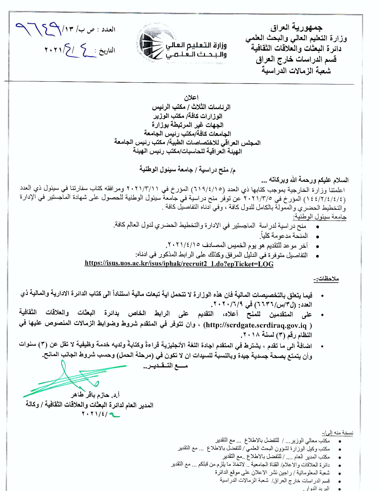

دليل التقويم ومعادلة الشهادات
تود دائرة البعثات والعلاقات الاعلان عن اطلاق الموقع الالكتروني
للشعب المبينة في الجدول ادناه، وبخصوص ذلك نود التنويه للاتي
| الشعبة | تاريخ الاطلاق | الاعلان |
|---|---|---|
| الهندسية | 2021-02-09 | اضغط هنا |
| العلوم الصرفة | 2021-04-15 | اضغط هنا |
| الزراعية والطب البيطري | 2021-04-15 | اضغط هنا |
| الانسانية | 2021-06-24 | اضغط هنا |
| الاجتماعية | 2021-07-29 | اضغط هنا / اضغط هنا |
| طبية | 2022-02-01 | اضغط هنا |
التعليمات
- سوف يكون التقديم لشعبة العلوم الهندسية والعلوم الصرفة والزراعية والبيطرية والانسانية والاجتماعية والطبية
- لن يتم استلام اي معاملة تقويم بشكل ورقي بالنسبة للمتقديمن للتقييم على الاختصاصات اعلاه
- لايتطلب حضور الطالب بعد التقديم لدائرة البعثات والعلاقات الثقافية وسوف يتم التواصل مع الطالب من خلال البريد الالكتروني الخاص به لاعلامه بالمستجدات
- سيتم اعلام المتقدم بموعد المقابلة بعد التدقيق الاولي من خلال مراسلته (عن طريق البريد الالكتروني) وذلك لتدقيق الوثائق والجواز راجين الالتزام بالحضور حسب الموعد المرسل لكل طالب
- يجب حضور الطالب حصرا للموعد
-
التقديم للتخصصات الشعب غير المذكورة اعلاه سيكون ورقي ولاتغير في الإجراءات
يرجى الاطلاع على دليل التقييم -
يرجى ملئ البيانات بدقة والتاكد من صحتها
يرجى الاطلاع على الاستمارة (قد تختلف الاستمارة من متقدم الى اخر حسب الحالة الوظيفية والشهادة) -
يرجى الاطلاع على سير المعاملة
اضغط هنا
{kind=link}
معلومات اضافية
- يرجى اتباع التعليمات ادناه ومشاهدة الفديوات التعليمية لتجنب تاخر المعاملة
-
يرجى اختيار الشعبة الصحيحة وحسب الخلفية العلمية
- وفي حال كانت الشهادة المرام معادلتها في تخصص هندسي وكانت الخلفية العلمية هي علوم صرفة يرجى اختيار شعبة العلوم الصرفة مثلا طالب مستحصل الماجستير في هندسة الحاسوب والبكالوريوس هو علوم حاسوب يجب ان يختار شعبة العلوم الصرفة والعكس صحيح
- التحصيل الدراسي الحالي هو اخر شهادة مستحصلة من داخل العراق او اخر شهادة مستحصلة من خارج العراق و تم معادلتها من قبل وزارة التعليم العالي العراقية
-
لتغير موعد مرسل من قبلنا يرجى اتباع التعليمات المرفقة

المستمسكات المطلوبة
- جميع جوازات السفر ضمن فترة الدراسة
- جميع صفحات الجواز التي تحتوي على اختام بشكل ملف PDF
- الشهادة السابقة للشهادة المرام معادلتها (او قرار التقييم في حال كانت من خارج العراق)
-
الشهادة المرام معادلتها
- الشهادة الجدارية
- الوثيقة الدراسية بالدراجات
-
(ان وجد) كتاب استثناء
- ذوي الشهداء
- كتاب السجناء السياسين
- اخرى
- تعهدات (حسب الحالة الوظيفية)
- صورة شخصية
- (ان وجد) رسالة الماجستير او اطروحة الدكتوراه
- عدم الممانعة (بالنسة بالموظفين
- كتاب الامر الادري (اجازة دراسية, بعثة و زمالة)
- نسخة من الواكلة في حال وجود وكيل
اجرائات المعاملة
- يقوم الطالب بتقديم المعاملة الالكترونيا وحسب الروابط اعلاه
- يتم تدقيق المعاملة الالكترنيا وارسال الملاحظات للطالب عبر البريد ويمكن للطالب الاطلاع على الملاحظات من خلال متابعة معاملتي
- يتم ارسال موعد للطالب بعد اكمال جميع المتطلبات الخاصة بالمعاملة (يرجى الاطلاع على الملاحظات في قسم ملاحظات التدقيق)
-
قبل يوم المقابلة يقوم الطالب بعمل كشف استلال في حال (النفقة الخاصة, اثناء التوظيف وموفدين ) يرجى الاطلاع على تعليمات كشف الاستلال
كشف الاستلال - يوم المقابلة يقوم الطالب بجلب المستمسكات والوثائق الاصلية مع ايصال كشف الاستلال
- يقوم الطالب باتمام المقابلة وعمل ورقة الاقامة وتسليم كشف الاستلال
- يقوم الطالب بممتابعة المعاملة عبر البريد وعبر متابعة معاملتي
- المراحل المتبقية
- شوون الدارسين
- رصانة
- تحديد اختصاص (يجب ان يكون الطالب قد اتم الاقامة وكشف الاستلال في حال كانت مطلوبة منه)
- تدقيق نهائي
- جدارية
- امر
- موعد تسليم الوثائق
- يمنع حضور الطالب بدون موعد عبر الايميل لاي سبب كان
ملاحظات مهمة لتجنب تاخر التدقيق
-
جميع صفحات الجواز التي تحتوي على اختام بشكل ملف PDF
-
يجب اخذ سكنر واضح يبين كامل الصفحة الخاصة بالجواز وكما مبين في الصورة
- يرجى اخذ سكنر لجميع الصفحات التي تحتوي على ختومات (خارج او ضمن فترة الدراسة)
- في حال وجود اكثر من جواز يرجى ترتيبها بالتسلسل الاقدم ثمة الاحدث
- في حال وجود جواز موقت يرجى رفع جميع الصفحات التي تحتوي على محتويات ومن ضمنها الختم
- يرجى مراعات ترتيب الصفحات حسب تسلسلها
- لاداعي لرفع الاوراق الفارغة
- لاحاجة للطالب الذي يروم معادلة البكالوريوس ان يقوم برفع الجواز
- لاحاجة لطالب البعثة من رفع الجواز ويقوم برفع ورقة بيضاء بدلا عنه
- طالب الدراسة البحثية يقوم برفع تعهد كون الدراسة كانت بحثية فقط بدلا عن الجواز
-
يجب اخذ سكنر واضح يبين كامل الصفحة الخاصة بالجواز وكما مبين في الصورة
-
الجدارية والدرجات المرام معادلتها
- رفع جميع الختومات مع المستمسك وخاصتا ختم الملحقية او السفارة في حال عدم وجود ملحقية
- في حال كانت الوثائق بغير اللغة العربية او الانكليزية يرجى رفع الترجمة مع الوثيقة وبالترتيب (الترجمة + الاصل + الختومات)
- يجب اخذ سكنر واضح للوثيقة على شكل A4
- بالنسبة للدراسة البحثية يمكن رفع ورقة بيضاء بدلا عن وثييقة الدرجات لعدم وجود هكذا وثيقة
-
الوثائق السابقة للشهادة المرام معادلتها
- رفع جميع الختومات مع المستمسك
- يجب اخذ سكنر واضح للوثيقة على شكل A4
- في حال كانت الشهادة مستحصلة من خارج العراق يرجى رفع الجدارية والامر الاداري الخاص بالمعاملة
- في حال المتقديمن لمعادلة البكلوريوس منمن كانت شهادة الاعدادية من خارج العراق تزويدنا بكتاب معادلة الشهادة من وزارة التربية
-
صورة شخصية
- رفع صورة ذات خلفية بيضاء حصرا
- صورة حديثة واضحة حيث سوف يتم طباعتها مع الجدارية
- لايجوز اخذ سكنر للصورة الشخصية حيث سوف تكون غير واضحة وبدلا عن ذلك يرجى التقاط صورة جديدة للمتقدم باستخدام الهاتف النقال او كامرة حديثة ورفع تلك النسخة
-
نموذج
-
(ان وجد) رسالة الماجستير او اطروحة الدكتوراه
- يستحسن رفع الاطروحة كاملة اذا كانت باللغة العربية او الانكليزية
-
في حال تعذر رفع الاطروحة لكبر حجمها او انها بلغة غير اللغة العربية او الانكليزية يرجى تحميل التالي على شكل pdf واحد في المكان المخصص (وترجمته للغة العربية او الانكليزية) في حال كانت بلغة اخرى
- نسخة واضحة وملونة من الصفحة الاولى التي تتضمن عنوان الرسالة للماجستير والصفحة الاولى لرسالة الماجستير + الصفحة الاولى لطروحة الدكتوراه بالنسبة للمتقدم للتقييم لشهادة الدكتوراه
- نخسة واضحة وملونة من ملخص بحث الماجستير او الدكتوراه
- نسخة واضحة من جدول المحتويات لرسالة الماجستير او اطروحة الدكتوراه
- نسخة واضحة وملونه لجدول البحوث المنشورة خلال فترة الدراسة
- نسخة واضحة وملونه لاهم استنتاجات رسالة الماجستير او الدكتوراه
-
عدم ممانعة
- زمالات (خاصة او حكومية), بعثات او اجازات دراسية منمن لديهم امر وزاري اواداري صادر من دائرة البعثات يقوم الطالب بتزويدنا بمباشرة في جهة انتسابه بعد انهاء الدراسة موجهة الى وزارة التعليم العالي / دائرة البعثات والعلاقات الثقافية ويتم رفعه في حقل عدم الممانعة
-
عدم ممانعة من تقييم الشهادة للدارسين اثناء التوظيف على النفقة الخاصة دون اجازة دراسية والمتخرجين بعد 28/10/2020
- يجب ان يذكر لامانع لدينا من تقييم الشهادة
- يجب تزويدنا بجميع الاجازات اثناء فترة الدراسة - امر وانفكاك ومباشرة
- يتم ارفاقها جميع ذلك في ملف واحد في حقل عدم الممانعة
- بالنسبة لدوائر فك الارتباط يمكن للدوائر البلديات ودوائر الشباب والرياضة ودوائر الزراعة جلب عدم الممانعة من مجالس المحافظات
- للمتخرجين قبل نفاذ القانون يطالبون برفع الاجازات اثناء الدراسة فقط
- الموظفين الذين يملكون امر اجازة دراسية بدون فتح ملف في دائرة البعثات (موفد) يطابلون (بعدم ممانعة + المباشرة بالوظيفة بعد انهاء الدراسة)
- بعثات اللجنة العليا لتطوير التعليم في العراق مطالبين برفع براءة ذمة من اللجنة بالاضافة الى المباشرة الموجهة الى وزارة التعليم العالي / دائرة البعثات والعلاقات الثقافية ويتم رفعه في حقل عدم الممانعة وبالنسبة لغير الموظفين يتم رفعها ضمن قناة التقديم
- للمبتعثين من غير الموظفين يجب تزويدنا بعدم ممانعة من تقييم الشهادة من جامعاتكم التي قامت بيفادكم ورفعه ضمن قناة التقديم
-
كتاب الامر الادري (اجازة دراسية, بعثة و زمالة)
- بالنسبة للمبتعثين على اللجنة العليا لتطوير التعليم في العراق يجب رفع قرار الضم وقرار السفر والامر الاداري بالترشيح الصادرة من اللجنة العليا بملف واحد بالمكان المخصص
- بالنسبة للمبتعثين على وزارة التعليم العالي رفع الامر الوزاري الصدار من التعليم العالي والبحث العلمي
- بالنسبة للاجازات رفع الامر الاداري الصادر من دائرة البعثات والعلاقات الثقافية
- بالنسبة للزمالات رفع الامر الوزاري الصدار من التعليم العالي والبحث العلمي
- بالنسبة للموفدين على وزارات اخرى منمن لديهم اجازة او زمالة ولم يتم اصدار امر اداري او وزاري من التعليم العالي رفع الامر الاداري او الوزاري الخاص بوزارتهم مع اختيار قناة الموفدين
- في حال تم تغير جامعة او بلد الدراسة يتم رفع الاوامر التي تثبت ذلك مع الاوامر الاصلية
-
نماذج السكنر المقبول وغير المقبول للوثائق
مقبولة
افتح الصورة
غير مقبولة بسبب انها مائلة
افتح الصورة
غير مقبولة بسبب القطع اسفل الصفحة وفقدان بعض البيانات
افتح الصورة
غير مقبولة بسبب ظهور سطح خلف الصورة
افتح الصورة
غير مقبولة بسبب وجود لون احمر على الصورة
افتح الصورة
غير مقبولة بسبب عدم الوضوح
افتح الصورة
غير مقبولة بسبب انها مظلمة
افتح الصورة
غير مقبولة بسبب انها تحتوي اضاءة عالية
افتح الصورة
غير مقبولة بسبب وجود ظل
افتح الصورة
غير مقبول بسبب الحاشية البيضاء بسبب استخدام برنامج ال word في دمج الصورة
افتح الصورة
غير مقبولة بسبب وجود علامة مائية لاسم البرنامج المستخدم في اخذ السكنر
افتح الصورة
التعهدات والاستمارات ونماذج الكتب
استمارة الاقامة
- يقوم الطالب يوم المقابلة بعد الحصول على موعد بعمل ورقة الاقامة
- يتحاج الطالب الى الجواز الاصلي (واحد او اكثر) التي تم استخدامها اثناء فترة الدراسة لعمل ورقة الاقامة
- في حال كان لدى الطالب كتاب يثبت الدراسة عبر احد المنصات الالكترونيا او كتاب موسسة الشهداء او السجناء سوف يتطلب عمل صحة صدور
كشف الاستلال
في حال الطالب ان نفقة خاصة غير موظف او نفقة خاصة اثناء التوظيف او موفد (اجازة دراسية دون فتح ملف لدى دائرة البعثات) يكون مشمول بكشف الاستلال
- يقوم الطالب بالتقديم الالكترونيا والحصول على رقم معاملة وطباعة الموصل
-
زيارة احد المراكز الخاصة بكشف الاستلال (قسم البعثات والعلاقات الثقافية في ذلك المركز) مع وصل التقديم والنسخة الورقية مختومة من الملحقية و الجامعة ونسخة الالكترونيا من الاطروحة
- جامعة بغداد
- الجامعة المستنصرية
- جامعة النهرين
- الجامعة التكنولوجية
- جامعة الموصل
- جامعة البصرة
- جامعة الكوفة
- جامعة بابل
- جامعة ذي قار
- جامعة ميسان
- جامعة واسط
- الجامعة المثنى
- جامعة القادسية
- جامعة الانبار
- جامعة كربلاء
- جامعة تكريت
- جامعة ديالى
- جامعة كركوك
- الجامعة التقنية الوسطى
- جامعة القاسم الخضراء
- جامعة الكرخ للعلوم
- الجامعة العراقية
- جامعة سامراء
- جامعة الفرات الاوسط التقنية
- جامعة تلعفر
- استلام وصل يثبت تسليم الاطروحة من المركز
- يقوم الطالب بملئ الاستمارة التالية لتحويل المعاملة الى مركز الاستلال من اجل اتمام الاجراءات استمارة
تطبيقات مفيدة من اجل عمل نسخة الالكترونية من الوثائق
-
ID Photo application:يستخدم لتكوين صورة شخصية بخلفية بيضاء على الهاتف الذكي
-
Microsoft Lens - PDF Scanner:يستخدم لاخذ صور من الوثائق على الهاتف الذكي
-
Adobe Acrobat Pro DC: لتعديل مستندات ال pdf على الحاسوب
-
Microsoft Office Picture Manager: برنامج مبسط لضغط وتعديل الصور
32 bit
64 bit
-
ilovepdf:لدمج وتقليل حجم المستمسك
الموقع
فديوهات تعليمية عن كيفية التسجيل والتقديم
لزيارة القناة الخاصة بمنظومة دائرة البعثات والعلاقات الثقافية قناة اليوتيوب